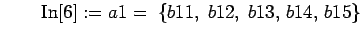
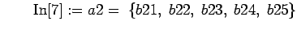
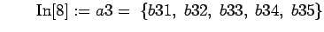
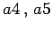
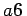
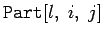
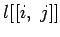
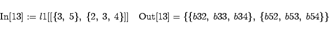

Die Elemente von Listen können wiederum Listen sein, so daß verschachtelte Listen entstehen. Setzt man z.B.



und analog für  und , so entsteht eine verschachtelte Liste, die hier wegen ihres Umfanges nicht explizit dargestellt werden soll. Mit  greift man auf das j-te Element der i-ten Unterliste zu. Das gleiche Resultat erhält man mit . Im betrachteten Beispiel wird
| Beispiel |
|
Für das oben betrachtete Beispiel etwa 
|
Aus diesen Darlegungen ist das Prinzip der Verschachtelung von Listen erkennbar. Es macht keine Mühe, Listen mit der Verschachtelungsstufe 3 und höher zu entwerfen und auf diese mit entsprechenden Auswahloperationen zu wirken.
Die Möglichkeit der Verschachtelung von Listen öffnet den (symbolischen) Zugang zu einer Reihe von Spezialgebieten der Mathematik. So lassen sich Vektoren und Matrizen erzeugen; damit wird die lineare Algebra symbolisch möglich. Des weiteren lassen sich Tensoren definieren und symbolische Tensorrechnung betreiben.